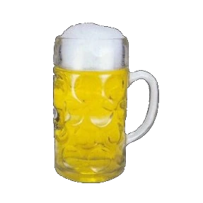
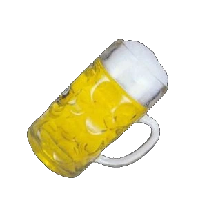

¡¡¡Otra ronda de… CERVEZA!!!


Saborear una cerveza en el momento adecuado es un gran placer al alcance de todos. Esta refrescante bebida compuesta de agua, malta, lúpulo y levaduras ha venido reconfortando al hombre desde tiempos inmemoriales.
Sus excelentes propiedades han hecho de ella un producto popular de consumo masivo, que guarda tras de sí una cultura milenaria y una tradición de gran riqueza.
Entrar